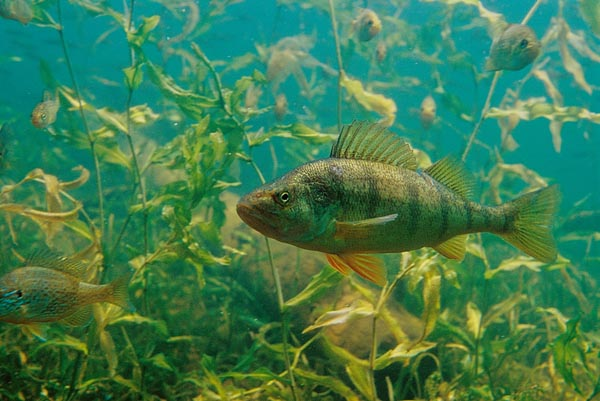

 Researchers for the North Temperate Lakes Long-Term Ecological Research program have collected fish from a number of lakes in Wisconsin since 1981. The total lengths and weights of Yellow Perch (Perca flavescens) captured on Trout Lake from 1981-2006 is recorded in YPerchTL.csv (view, download, meta). Use these data to answer the following questions. [Note that these data came from this website. See the site for more information about the sampling protocol that produced these data.]
lakeid and spname variables from the data.frame (these are constant for all records). Use this data.frame for the remaining questions.length and weight variables to len and wt, respectively.Save the script from this exercise as these data will be used in this plotting, this size structure, this weight-length relationship, and this condition exercise.
from Derek H. Ogle , created 08-Nov-15, updated 08-Nov-15, Comments/Suggestions.